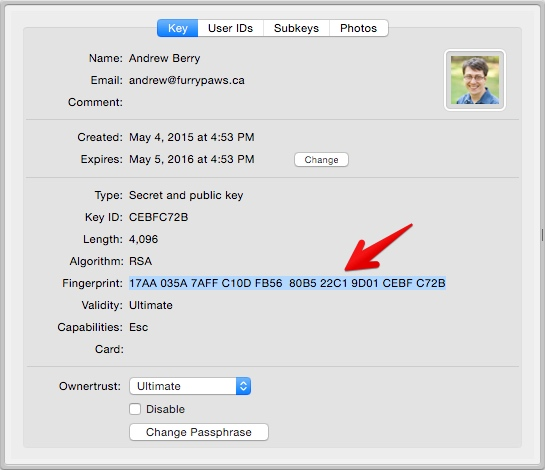

Using PGP/GPG for Secure Communications
The original program, Pretty Good Privacy, eventually became a standard called OpenPGP. GNU PGP, or "GPG", is the most widely used PGP implementation, but for simplicity this document refers to "PGP".
PGP (Pretty Good Privacy) is a system that lets people communicate with each other securely online. PGP lets you sign emails and files so others can be sure they haven't been modified and are actually from you. You can also use PGP to encrypt emails and files so only the intended recipients can view them. Why would you want a PGP key?
- You can sign emails you send and receive encrypted email without needing to pay for a certificate. Great for passing around passwords and credentials.
- You can sign and encrypt files that can be decrypted on any computer (unlike encrypted disk images that are tied to OS X). You could use PGP to encrypt a PDF of a sensitive HR form, and then the filled-out version could have a real digital signature on the returned copy.
- If you're writing code, you can use git to sign commits and tags. That lets others verify not only that the code hasn't been modified, but that the commit by Sally Young is actually from Sally Young and not James Sansbury.
What are the limitations of PGP?
- Many email programs don't support any encryption systems at all, and some that do only support the centralized S/MIME standard. Most desktop email clients have plugins to add PGP support, but mobile devices usually don't support plugins in their apps.
- Using any sort of encryption or signing is difficult in webmail. Gmail can't search the contents of encrypted emails since Gmail doesn't have your decryption keys. There are browser plugins to add PGP support to Gmail on the web, but Gmail on Android and iOS don't support those plugins.
- When signing (and not encrypting) emails, recipients can get confused by the signature attachment added to the message. In general, don't sign emails to clients unless you know they are aware of PGP.
- For someone to decrypt a file, they have to be set up with PGP. You can't just call them and give them a password. However, PGP is pretty much the only secure solution for file encryption that works on all operating systems.
PGP uses a web of trust to help us validate keys and their owners. In the SSL certificate world, you pay Verisign or some other company to validate your identity. Often it's a basic email or phone call check. With PGP, Andrew can say "I validated that PGP key ASDFXYZ belongs to Matt, because I saw him in person and looked at his drivers license". If you then decide to trust Andrew's key, you'll automatically be able to trust Matt's key. This model works really well for companies like Lullabot, where we work mostly online but see each other in person a few times a year.
Creating a PGP Key
These steps use GPG Tools for OS X. GPG also has a Windows version, and is available for All The Linuxes. Every PGP key has two halves: a public key that you share, and a private key that you keep to yourself. If someone else gets your private key (or the key on your hard drive plus your passphrase), they can pretend to be you and decrypt all your data. Treat your private keys like you would treat your banking or Google passwords.
Create a new key with GPG Keychain
Open GPG Keychain, and click the "New" button to create a key. Enter your full name, and the email address you'd like to use. You can add additional email addresses later to the same key. Change the expiration date to one year from today. This value can be changed later, so set a calendar reminder to extend the expiration date of your key before that expiry date. If you lose your key, then this date will eventually kick in telling others not to use this key anymore. Enter a strong passphrase for the key. This should be one of the complicated passwords you do remember and commit to memory. Your computer login password isn't a bad idea, given that your passphrase will probably be stored in the OS X keychain. You can change this password later. Click Generate key, have fun spamming your mouse or keyboard, and you will have a new PGP key!
Add additional emails to your key
To add more email addresses to your key, click Details, and then User IDs. If you have a different legal name from your given name, you can add those in here as well.
Adding your picture to your key
Adding a picture to your key gives yet another way to help validate your identity. PGP keys are shared as small text files, so you don't want to attach a 10MB JPEG to your key. For Lullabot employees and contractors, you can grab a pre-sized thumbnail from your user account edit form on lullabot.com. Save this file, and then drag it in to the "Photos" tab on your key.
Uploading your public key
Now that your key has been created, upload it to the public key directory. Any time you update your key's public data, remember to upload it again!
Generating a revocation certificate
Sometimes you might find yourself in a situation where you've lost control of your key. Perhaps you lost your laptop, or someone you don't trust was using it while you were logged in. A revocation certificate lets you tell the world that a key should no longer be used or trusted. GPG Tools for OS X will automatically store a revocation key for you, so as long as your computer is backed up it should always be possible to revoke a lost key.
Encrypting a file
On OS X, right click a file, and "OpenPGP: Encrypt" will show up under the Services menu. Choose who you want to be able to decrypt the file. In general, you will want to sign the file as well so the recipient knows it was you that sent it. If you chose to sign the file or let yourself decrypt it, you will be asked for your passphrase and a ".gpg" file will be created. This file can be emailed, shared on Dropbox, and so on, and it will be secure. There's a new "Encrypt with password" checkbox as well. That is useful for anyone who hasn't set up a public key yet. However, it still leaves you having to communicate that passphrase somehow. Try to use public keys instead because they are much easier to use once they are set up.
Decrypting a file
Double click the .gpg file, and enter your passphrase. You might not be asked for your passphrase if you recently provided it. If the file was signed, and you have their public key in your keyring, GPG will tell you if it could validate who sent the file as well.
Key Parties and the Web of Trust
If a gaggle of 'bots are getting together in the real world, it's a great chance to sign any new keys! Here's a condensed set of steps taken from The Keysigning Party HOWTO.
- Each person should create a key using the above steps.
- After, they should give the organizer the email attached to the key and the fingerprint of their key.
- The organizer should import the key from the public server.
- For the organizer, it's useful to create a separate keyring for the party to simplify creating a key list.
gpg --keyring ~/Desktop/party.gpg --no-default-keyring --recv-keys [KEY-ID]
- For the organizer, it's useful to create a separate keyring for the party to simplify creating a key list.
- The organizer should then provide each person with a table of keys they can use to mark the ones they have validated.
Signing a key
Once you have validated a key fingerprint belongs to a person, you can right-click on it and select "Sign". Uncheck the Signature Expires checkbox for anyone whose identity you are very confident in. For Lullabot employees and contractors, meeting in person should be enough to select "I have done very careful checking" since HR will have validated identities for employment. For others, check their driver's license or passport. Once the key is signed, upload it to a key server to tell the world about your trust in the identity. If your key is signed by someone else, you can update your key from the public key servers to add the signature to your local copy of the key.
Validating keys
The algorithm for the "Validity" field is somewhat complex. You might wonder why GPG isn't showing a key you think should be "valid" as valid. To paraphrase the GPG manual:
- Keys you personally sign will show as valid
- At least three "marginally trusted" keys need to sign a key for it to be fully trusted
- The "ownertrust" setting or dropdown on a person's key describes how much you trust that person to validate other keys in your keyring.
GPG tries to be very flexible, and allows you to configure how it determines if keys are trusted or not. For our purposes, we recommend that you leave the GPG settings at their defaults. If your key isn't showing up as valid to others, then the best solution is to get more 'bots to sign your key. If other keys aren't showing up as valid for you, then you should find 'bots who's keys you can sign to bring them in to your Web of Trust.